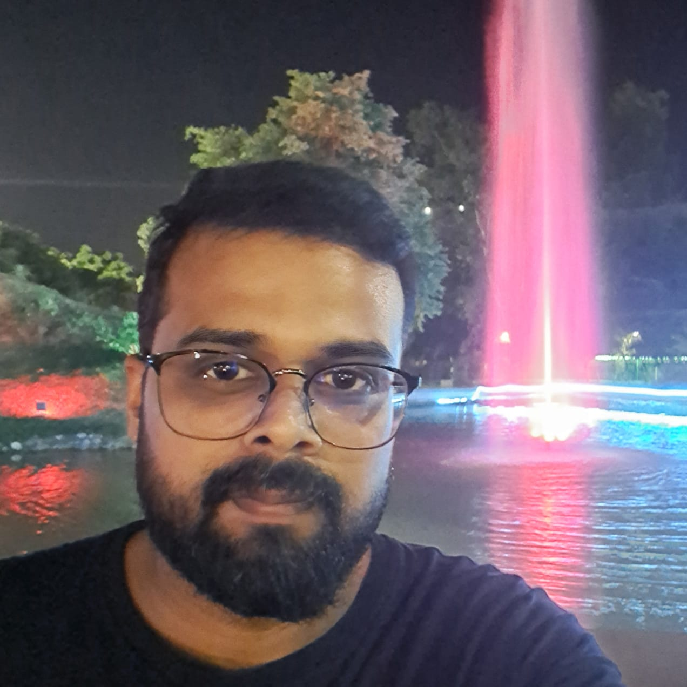

Charchit Chandra

Summary
Aspiring Software Engineer with ME in Computer Science and Engineering. I am very passionate
about coding. I am actively looking for job as a Java Developer.
Education
- ME in Coputer Science and Engineering - Thapar Institute of Engineering and
Technology. (2022-2024)
Skills
- Core Java: 🌟🌟🌟🌟
- Java 8(New Features): 🌟🌟🌟
- JDBC: 🌟🌟
- Servlet: 🌟🌟🌟
- JSP: 🌟
- Frameworks: Currently building proficiency in Spring Boot, and Hibernate
- HTML: 🌟🌟🌟🌟
- CSS: 🌟🌟
- MySQL: 🌟🌟🌟
- Oracle: 🌟🌟
Thesis
Risk prediction of cardiovascular disease based on gender
Analyzed cardiovascular data from the UCI ML repository for male, female, and combined
datasets using six algorithms. Identified gender bias as accuracy for male and
combined datasets was nearly identical. Concluded that separate prediction models
are essential for males and females for accurate risk assessment.
Project
Predicting diabetes in pregnant women using ensemble learning
Used multiple algorithms to analyze the PIMA Indian Diabetes dataset. Achieved
significant accuracy in predicting diabetes risk, showcasing data preprocessing,
feature selection, and model evaluation skills.
Certificates
- Machine Learning, ML(NPTEL) (Feb 2021 - April 2021 )
- Enhancing Soft Skills and Personality (NPTEL) (Feb 2021 - April 2021)
Achievements
- Cleared ISI Kolkata written test for M Tech CSE.
- Got AIR - 176 in 8th National Science Olympiad.
Others
Hobbies
Contact Me